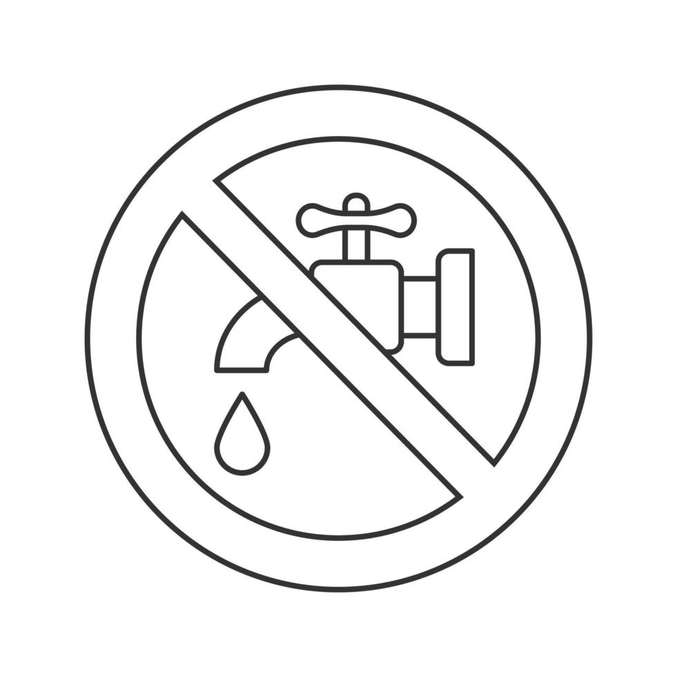

Abordar la crisis del agua requiere un enfoque multifacetico que involucre a gobiernos, industrias, comunidades y ciudadanos. No hay una solucion unica, sino una combinacion de estrategias.
1. Gestion Sostenible de Recursos Hidricos
Implica planificar y utilizar el agua de manera que se garantice su disponibilidad a largo plazo para las generaciones futuras:
- Mapeo y monitoreo: Conocer con precision la cantidad y calidad de los recursos hidricos existentes.
- Politicas y leyes: Implementar regulaciones justas para el acceso, uso y conservacion del agua.
- Cooperacion transfronteriza: Acuerdos entre paises que comparten cuencas fluviales o acuiferos.
- Integracion sectorial: Coordinar la gestion del agua con la planificacion urbana, agricola y energetica.

2. Mejora de la Infraestructura
Invertir en infraestructura moderna y eficiente es clave para reducir las perdidas y garantizar el acceso:
- Reduccion de fugas: Reparar y modernizar redes de tuberias antiguas.
- Almacenamiento: Construccion y mantenimiento de embalses y presas, siempre considerando el impacto ambiental.
- Plantas de tratamiento: Invertir en tecnologias avanzadas para potabilizar agua y tratar aguas residuales.
- Captacion de agua de lluvia: Sistemas que recogen y almacenan agua de lluvia para uso domestico o agricola.
3. Tecnologias para la Eficiencia del Agua
La innovacion tecnologica puede jugar un papel crucial en la optimizacion del uso del agua:
- Riego eficiente: Implementacion de riego por goteo, aspersores de baja presion y tecnicas de agricultura de precision que reducen drasticamente el uso de agua en la agricultura.
- Reutilizacion de aguas residuales: Tratamiento avanzado de aguas grises y negras para usos no potables (riego, industria, recarga de acuiferos).
- Desalinizacion: Conversion de agua de mar en agua dulce, vital para regiones costeras aridas, aunque energeticamente intensiva.
- Sensores y monitoreo inteligente: Uso de tecnologia para detectar fugas, optimizar el riego y monitorear la calidad del agua en tiempo real.
4. Promocion de la Conservacion y Educacion
Cambiar los habitos de consumo y fomentar una cultura de ahorro de agua es fundamental:
- Educacion publica: Campanas de concientizacion sobre la importancia del agua y como ahorrarla en el hogar y en la industria.
- Practicas domesticas: Promover duchas mas cortas, cerrar el grifo al cepillarse, usar lavadoras y lavavajillas eficientes.
- Precios justos del agua: Establecer tarifas que reflejen el costo real del agua para fomentar un uso mas consciente, a la vez que se proteja el acceso de los mas vulnerables.

5. Proteccion de Ecosistemas Acuaticos
Los ecosistemas sanos son cruciales para la calidad y cantidad del agua:
- Conservacion de humedales: Los humedales actuan como "rinones" naturales, filtrando contaminantes y recargando acuiferos.
- Reforestacion: Los bosques ayudan a retener el agua en el suelo y a regular los ciclos de lluvia.
- Reduccion de la contaminacion: Controlar los vertidos industriales, agricolas y domesticos para proteger las fuentes de agua dulce.